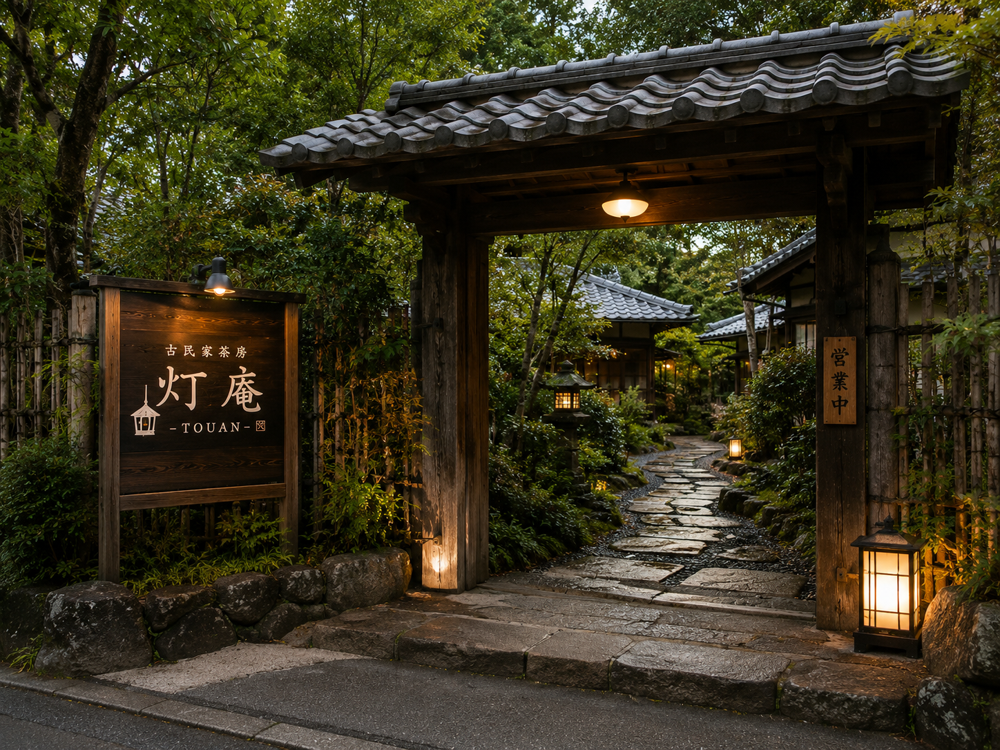

ACCESS
店舗名
古民家茶房 灯庵
KOMINKA SABOU TOUAN
KOMINKA SABOU TOUAN
住所
〒601-0000
京都府 美山 灯ヶ谷 七番地 ※架空住所です
京都府 美山 灯ヶ谷 七番地 ※架空住所です
営業時間
11:00 — 17:30
（ラストオーダー 17:00）
（ラストオーダー 17:00）
定休日
木曜日
ご案内
- ご予約はお受けしておりません
- 観光の途中に立ち寄り可能
- 手土産の販売あり
- 庭を眺めながらお過ごしいただけます
山道を進んだ先、暖簾が目印です。
※実際の地図ではありません。
サイト内で店舗の雰囲気を伝えるための簡易図です。
※実際の地図ではありません。
サイト内で店舗の雰囲気を伝えるための簡易図です。
How to Get Here
アクセスFrom Town to TOUAN
お車でお越しの方
最寄りの観光エリアから車で約15分。
山道を進んだ先にございます。
駐車場
近隣に駐車場をご用意しております。
数に限りがございますのでご了承ください。
立地について
山道を進んだ先にある隠れ家のような立地。
落ち着いたひとときをお過ごしいただけます。
First Visit
はじめての方へBefore Arriving
静かな山道の先に佇む灯庵。
はじめてお越しになる方へ、ささやかなご案内です。

-
01
暖簾を目印に 山道を進むと、深い緑の中に小さな暖簾が見えてきます。それが灯庵の入口です。
-
02
庭の入口からお入りください 建物の正面ではなく、庭の小径を抜けて玄関へと向かう導線になっています。
-
03
混雑時は少しお待ちいただく場合があります 席数に限りがございますので、観光シーズンには少しお待ちいただくこともございます。
-
04
静かな空間をお楽しみください 小さなお子様連れの方も歓迎いたしますが、館内ではゆったりとお過ごしください。